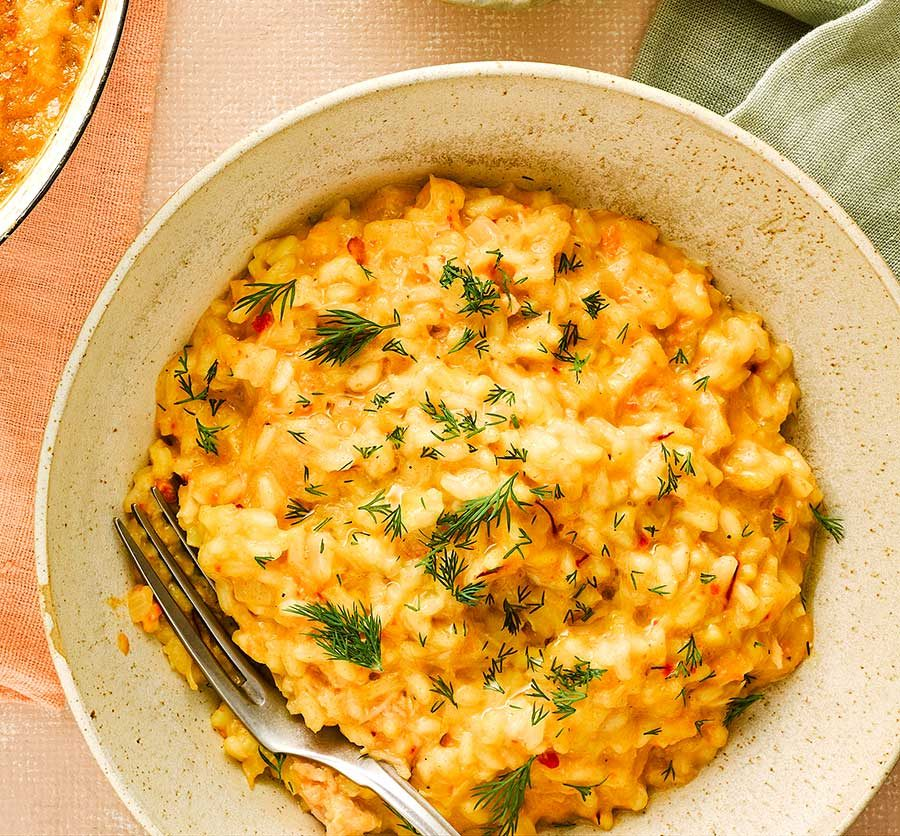

Risotto

Risotto is defined as a northern Italian rice dish cooked and stirred with broth until it reaches a creamy consistency.
Ingredients
- 1.1 litres organic stock , such as chicken, fish, vegetable.
- 1 large onion.
- 2 cloves of garlic.
Steps
- Warm your broth.
- Sweat the shallot
- Toast the rice.